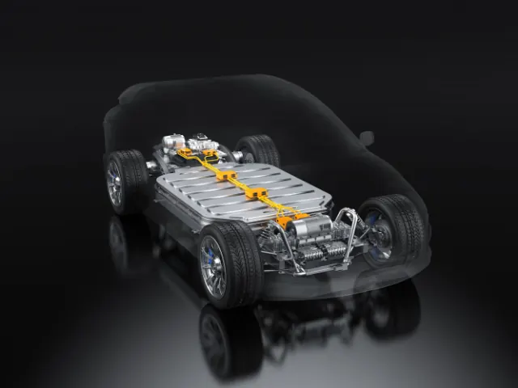
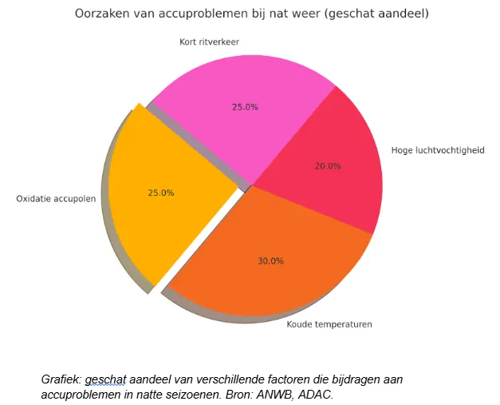

Partnerbijdrage
Het effect van nat weer op de gezondheid van batterijen
Gepubliceerd op 15 juli 2025

Waarom raakt je auto-accu leeg bij nat weer? Het probleem ontstaat door een combinatie van drie factoren: vocht dat elektrische verbindingen aantast en oxidatie veroorzaakt, kou die de accucapaciteit met tot 50% vermindert, en verhoogd stroomverbruik door verwarming, ruitenwissers en verlichting. De oplossing ligt in preventief onderhoud: laat je accu voor de winter testen, houd accupolen schoon en overweeg een AGM-accu voor betere prestaties onder natte omstandigheden.
Vocht dringt door in de motorruimte en veroorzaakt oxidatie aan accupolen en kabelverbindingen, wat de elektrische weerstand verhoogt. Tegelijk moet de accu harder werken vanwege kou en extra stroomverbruik. Volgens autospecialist AUTODOC: “Een auto-accu gaat doorgaans tussen de drie en vijf jaar mee. Deze gebruiksduur is afhankelijk van hoe er met de auto gereden wordt en van omgevingsfactoren.” Natte en koude omstandigheden verkorten deze levensduur aanzienlijk als er geen adequate zorg wordt genomen.
Hoe vocht elektrische verbindingen aantast
Regen en mist zorgen ervoor dat vocht zich ophoopt in de motorruimte. Dit vocht dringt door in elektrische verbindingen, waar het oxidatie veroorzaakt. Vooral de accupolen en kabelverbindingen zijn gevoelig. Zelfs een dunne oxidatielaag verhoogt de weerstand in het circuit, waardoor de accu harder moet werken.
Bij oudere voertuigen leidt dit snel tot zogenaamde lekstromen: kleine hoeveelheden stroom die verloren gaan zonder iets te doen. Het gevolg? De accu loopt langzaam leeg, zelfs als de auto niet rijdt.
Wat kou en vocht samen met je accu doen
Regenachtig weer gaat vaak hand in hand met lage temperaturen. En kou is berucht: accu’s leveren minder energie naarmate het kouder wordt. Tegelijk stijgt het stroomverbruik: verwarming, ventilatie, ruitenwissers en lichten draaien overuren.
Volgens ADAC verliest een standaard loodaccu bij 0 °C tot 35% van zijn capaciteit. Bij -10 °C is dat zelfs 50%.
Voor wie met een bedrijfswagen rijdt – bijvoorbeeld een accu voor Fiat Ducato – is dit cruciaal. Zulke voertuigen worden soms weken niet gebruikt of maken veel korte ritten, wat het risico op een lege batterij verder vergroot.

Waarom korte ritten de batterijen extra belasten
Bij regenachtig weer gebruiken bestuurders meer elektrische functies. Denk aan:
- Voor- en achterruitverwarming
- Stoel- of stuurverwarming
- Mistlampen en ruitenwissers
Op zichzelf geen probleem, maar als je steeds korte ritten maakt (minder dan 10 km), krijgt de dynamo onvoldoende tijd om de accu weer volledig op te laden. Hierdoor blijft de accu ‘onderladen’, wat leidt tot versnelde slijtage.
Welke accu types beter omgaan met slecht weer
Niet elke accu presteert even goed onder natte en koude omstandigheden. De standaard lood-zuur accu is het meest kwetsbaar: deze verliest veel capaciteit bij kou en heeft slechts gemiddelde weerstand tegen vocht, wat resulteert in een kortere levensduur bij slecht weer. AGM-accu’s presteren aanzienlijk beter met matige koudegevoeligheid en goede vochtbestendigheid, waardoor ze ideaal zijn voor moderne voertuigen met veel elektrische systemen. Gel-accu’s en lithium-ion accu’s tonen de beste prestaties met minimale koudegevoeligheid en uitstekende vochtbestendigheid, waarbij lithium-ion de langste levensduur biedt maar vooral wordt gebruikt in elektrische voertuigen en campers.
Accutype | Gevoelig voor kou | Vochtbestendig | Levensduur bij nat weer | Opmerking |
Lood-zuur (standaard) | Hoog | Gemiddeld | Kort | Betaalbaar maar kwetsbaar |
AGM | Matig | Goed | Lang | Ideaal voor moderne voertuigen |
Gel-accu | Laag | Zeer goed | Lang | Stabiel maar duurder |
Lithium-ion | Laag | Zeer goed | Zeer lang | Vooral in elektrische auto’s en campers |
De praktische keuze hangt af van je gebruik: voor dagelijks gebruik zijn AGM-accu’s vaak de beste balans tussen prijs en prestaties, terwijl gel-accu’s de voorkeur verdienen voor voertuigen die regelmatig stilstaan. Voor voertuigen die stil kunnen staan of veel stroom gebruiken – denk aan campers of werkbussen – is een AGM-accu vaak de beste keuze vanwege de combinatie van goede prestaties en redelijke prijs.
Wanneer accuproblemen het vaakst voorkomen
In 2023 registreerde de ANWB meer dan 215.000 meldingen van accuproblemen. Opvallend is dat meer dan 60% daarvan plaatsvond in de periode oktober tot maart — de maanden met de meeste regen, mist en kou.
Volgens hun pechstatistiek is bij 4 van de 10 gevallen in de winter de accu de directe oorzaak van het probleem.
Figuur — Oorzaken van accuproblemen bij nat weer

De onderstaande grafiek toont de verdeling van de hoofdoorzaken van accuproblemen tijdens nat weer. Koude temperaturen vormen met 30% de grootste bedreiging voor accu’s, gevolgd door oxidatie van accupolen (25%) en kort ritverkeer (25%). Hoge luchtvochtigheid draagt voor 20% bij aan de problemen. Deze cijfers bevestigen dat het vooral de combinatie van factoren is die accu’s kwetsbaar maakt: terwijl kou de capaciteit vermindert, zorgen vocht en korte ritten ervoor dat de accu onvoldoende kan herstellen en sneller verslechtert.
Praktische tips voor een betrouwbare accu in de regen
Wil je je accu langer in goede conditie houden? Volg dan deze eenvoudige aanbevelingen:
- Laat de accu testen voordat het winterseizoen begint
- Maak accupolen schoon en vet ze licht in om oxidatie te voorkomen
- Gebruik een druppellader als je de auto weinig gebruikt
- Controleer afdichtingen en houd de motorruimte droog
- Vervang een oude accu op tijd — wacht niet tot het te laat is
Een lege accu komt nooit gelegen — en al helemaal niet op een koude, natte ochtend. Het probleem wordt veroorzaakt door een combinatie van vocht, kou, kort ritverkeer en slijtage.
Door een accutype te kiezen dat bestand is tegen deze omstandigheden — zoals een AGM of gel-accu — en je voertuig goed te onderhouden, vermijd je veelvoorkomende problemen. En rijd je bijvoorbeeld met een Fiat Ducato of andere bedrijfswagen? Zorg dan voor een accu die geschikt is voor wisselende belasting en langere stilstand.
Bronnen:
- ANWB Wegenwacht Pechstatistieken 2023
- ADAC Batterij Prestatietests en Onderzoek
- AUTODOC
Terug naar de beginpagina
BEKIJKAutobedrijven en garages in Nijmegen
Zin om te beginnen? In onze bedrijvengids vind je alle 93 autobedrijven in Nijmegen, met openingstijden, kenmerken en een kaart.
Bekijk alle 93 autobedrijven in Nijmegen
Heb je zelf een autobedrijf? Laat je hier uitlichten.